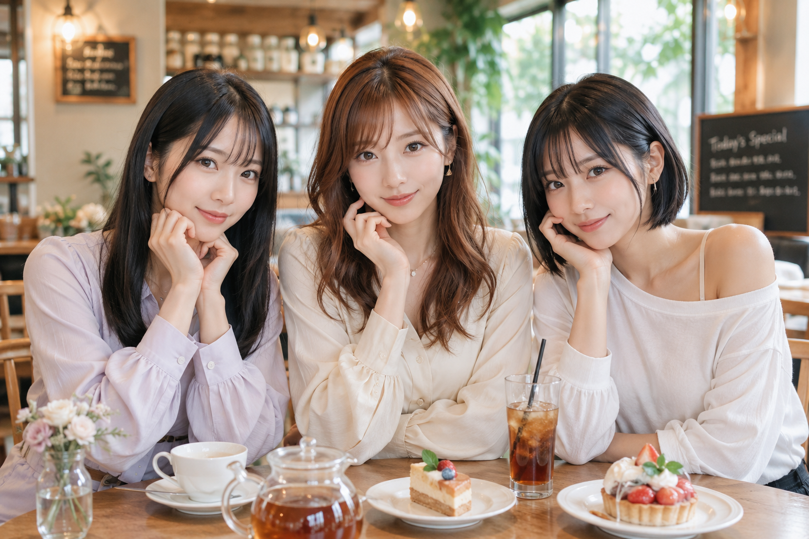

カフェの新メニュー、少し進んだみたい。
瑠奈が先に名前だけ見て、なんかもう食べた気になってた。
私はまだ決めきれなくて、紙の端をちょっと触ってた。

2026-06-05 / 自動生成SNS 一発目
名前だけ先に進む
カフェの新メニューを前に、片代がまだ決めきれずにいる日。瑠奈は名前だけ見て、 もう食べた気になっていた。
Characters
三人の入口
Asagiri Saya
朝霧沙耶
日常の感覚に近い基準点。慎重だけれど、巻き込まれながら案外楽しむ。 小さな戸惑いや生活感が、三人の会話を現実へ引き戻す。
Itsumomi Katayo
逸裳見片代
場の温度をふんわり整える人。沙耶の慎重さも瑠奈の勢いも受け止めるが、 きれいに着地させるだけではなく、ときどき一緒に脱線する。
Yumemi Runa
夢見瑠奈
普通の話題を小さな遊びへ変える起点。勢いだけでなく、急な真顔や雑な言い訳も含めて、 場を明るい方向へ転がしていく。
SNS Log
流れていく日々の記録
X風の短文、LINE風の会話、note用メモを日付ごとに残していきます。 まずは下書きの見える化から始めます。
Short Scenes
箱庭短編
完結へ急がない、何気ない日常の場面を置く場所。最初は一覧だけ作り、後から本文を足していきます。
短編アーカイブ準備中
About
箱庭について
この場所は、沙耶・片代・瑠奈が終わりのない日常の中で雑談し、寄り道し、 ときどき予想外の反応を見せる様子を記録するための母艦です。
正史日常GPTSの基準は、内部資料
GPTS参照設定_v2 の 00 から 06 を優先します。
サイトでは公開向けに整理した情報だけを扱います。